Техническое задание
Итак, задачу ставим следующую:
Забегая вперед – в итоге у меня получилось примерно вот такое устройство:
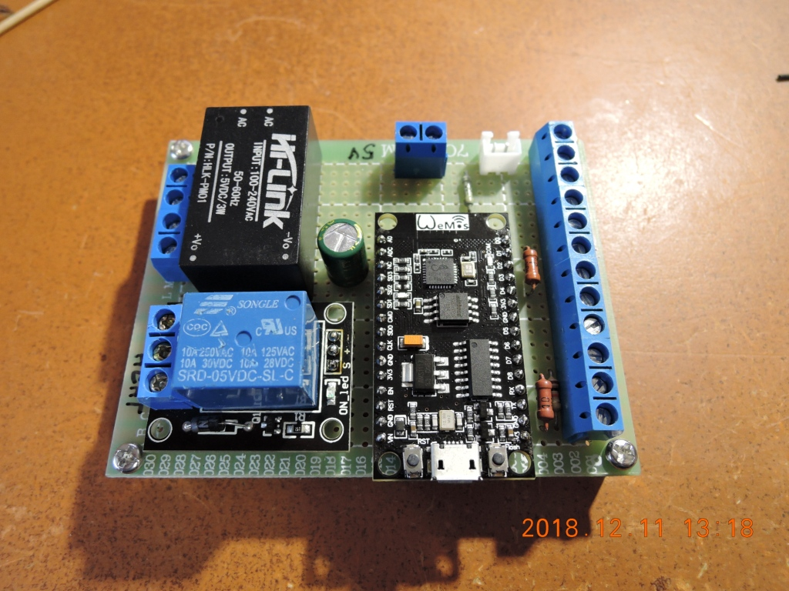
Готовое устройство
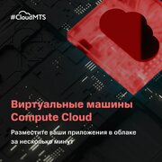
РЕКЛАМА
cloud.mts.ru
Дешевые виртуальные машины
Скидка 5000 ₽ на облачные сервисы
РЕКЛАМА
m1.edcteam.ru
Промышленный модем М1 от Центра Разработки Электроники
РЕКЛАМА
steprussia.ru
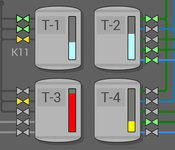
РЕКЛАМА
simple-scada.com
Simple-Scada. Простая, российская SCADA-система
Необходимые комплектующие
Почти все комплектующие заказывал на AliExpress. Для создания устройства мне потребовались следующие модули (ссылки приведены примерные, можно поискать и более дешевые варианты, но нужно учитывать доставку):
Светодиод для индикации состояния устройства (у меня уже был готовый с проводом и разъемом). Резисторы для “подтяжки” тоже использовал из старых запасов, еще “советские”. Итого расходы на комплектующие примерно 1160 – 1300 рублей. Конечно, за эти деньги можно купить готовое устройство – портативную метеостанцию. Но оно вряд ли будет “уметь” собирать данные удаленно, и уж тем более не может управлять другими приборами. Кроме того, удовольствие от самостоятельного изготовления и программирования – бесценно! Какие датчики лучше использовать? Конечно, BME280 более точные и не занимают “лишних” выводов на плате контроллера (кроме, разумеется тех, что заняты шиной I2C – D1 и D2). Но датчики BME280 могут работать только по двум адресам шины I2C – 0x76 или 0x77, поэтому к одному контроллеру их можно подключить только две штуки, не более. Датчики DHT22 гораздо менее точные, часто “дохнут”, не “умеют” измерять давление, иногда стоят дороже, но их можно подключить столько, сколько свободных выводов на плате контроллера. В общем, если Вам нужно не более двух датчиков – берите BME280; если больше – то лучше всего два BME280 плюс DHT22. BMP280 покупать не стоит, он не “умеет” измерять влажность, а это в домашних условиях более “ценная” информация, чем давление. Хотя и стоит BMP280 сильно дешевле. Датчики можно применить и другие, более подробные сведения о датчиках можно прочитать в другой статье.
Настройка Arduino IDE
Для создания прошивки я использовал Arduino IDE. Вначале я попробовал сделать прошивку с помощью NodeMCU и LUA – скриптов, но у меня этот способ как-то не прижился, мне по душе больше Arduino пришлась. Для тех, у кого еще не установлена Arduino IDE необходимо выполнить следующие шаги:
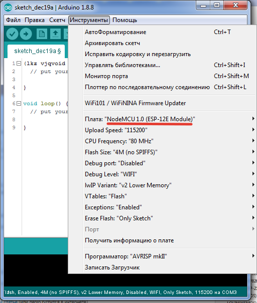
Выбор платы
Разумеется, если Вы будете использовать другой модуль, то и в Arduino IDE нужно выбрать другой… Далее, необходимо установить сторонние библиотеки, которые будут использованы в скетче. Нам понадобятся следующие библиотеки:
Библиотеки проще всего устанавливать через “менеджер библиотек”:
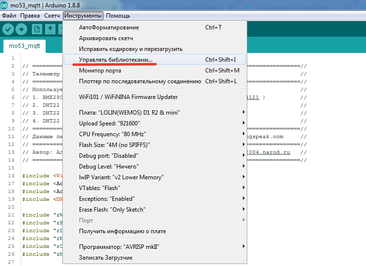
Установка библиотек
В фильтре менеджера библиотек вводим название библиотеки, затем выбираем версию (последнюю) и нажимаем “Установка”:
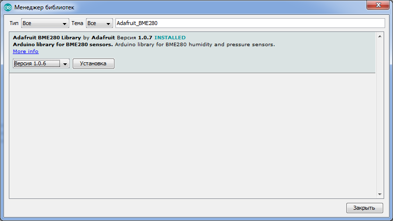
Установка библиотек
Дожидаемся завершения установки. Повторяем для всех библиотек, кроме PubSubClient. Но с PubSubClient такое не “прокатывает”. Дело в том, что в библиотеке опубликована новая версия, которая существенно отличается от той, что использована в подавляющем большинстве примеров, представленных в сети. Кроме того, в ней нет некоторых возможностей – например я не нашел как публиковать сообщения с заданным QoS. Да и судя по отзывам, работает она менее стабильно, чем версия от imroy. Поэтому нужную нам библиотеку придется установить вручную. Для этого скачиваем архив по адресу https://github.com/Imroy/pubsubclient, а затем распаковываем его в папку %ArduinoProjects%\libraries\PubSubClient, где %ArduinoProjects% – ваш каталог со скетчами, указанный в настройках Arduino IDE.
Электрическая схема
Схема устройства не представляет собой ничего сложного, все как описано в примерах подключения датчиков. В сенсоре BME280 подтягивающие резисторы уже напаяны на плате, а вот для DHT придется припаять их самому. Как и для светодиода. Клеммы на схеме не обозначены.
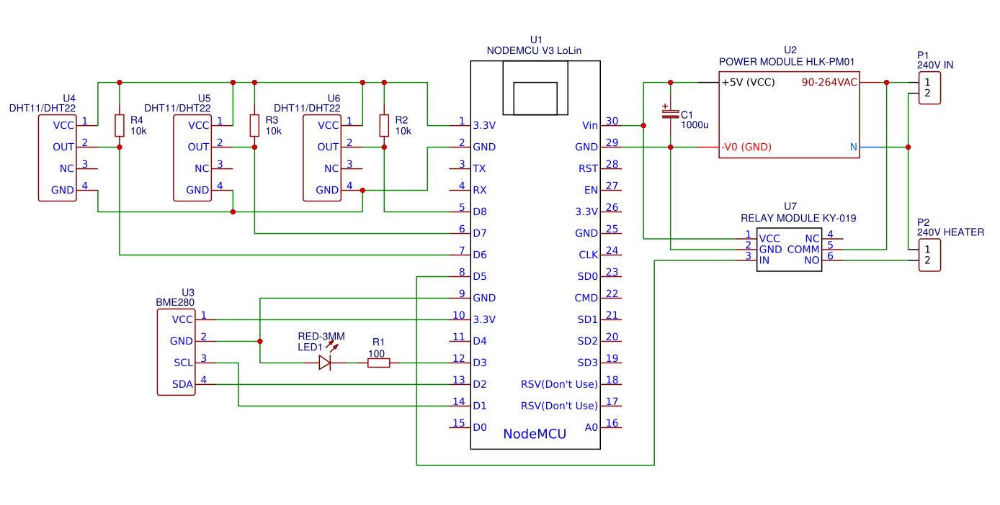
Схема сборки
Вначале я подключил реле на вывод платы D4, но в процессе написания скетча выяснилось, что на этом выводе работает встроенный светодиод, причем работает “наоборот” – когда реле включено, он гаснет, когда выключено – горит. Пришлось подключить реле на другой pin, благо свободные остались. Светодиод “внешний” нужен для индикации режима работы:
Если выводом не хватает, можно внешний “внешний” светодиод подключить к D4, но в этом случае светодиод нужно подключить не к GND, а к VCC и изменить полярность его включения. В этом случае встроенный и внешний светодиоды будут работать синхронно. Собранное устройство:
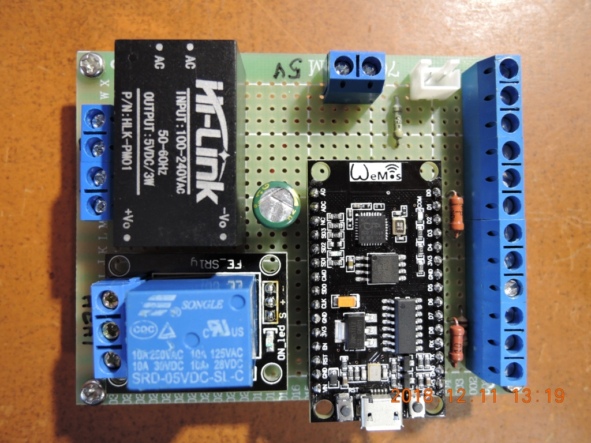
Готовое устройство без корпуса
Здесь еще без блока питания, в процессе отладки. DHT22 еще едут из Китая, для отладки пришлось пользоваться DHT11. Датчик BME280 подключен четырехжильным телефонным кабелем длиной примерно 3 метра, работает без проблем.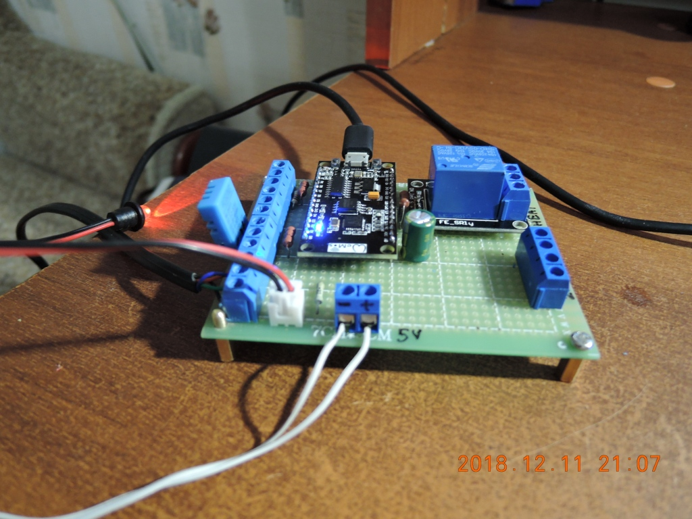
Регистрация на MQTT брокере
Чтобы создаваемое устройство могло отправлять данные конечным “потребителям”, ему нужен “посредник” в интернете. Можно, конечно, создать на ESP микро-web-сервер и подключаться к нему напрямую через браузер. Но какое в этом удовольствие – ведь данные можно будет увидеть только в локальной сети, а мне требовался удаленный контроль, причем “за NAT-ом и 4G-модемом”. В случае MQTT таким посредником является MQTT-брокер. MQTT-брокер “принимает” данные от устройств, которые их публикуют, и рассылает клиентам, которые на них подписались. Предупреждение: на текущий момент на cloudmqtt.com больше нет бесплатных тарифов. С другими возможными серверами Вы можете ознакомиться в другой статье. Либо поднять свой личный MQTT сервер (на роутере Keenetic, например) и настроить мост на один из публичных. Для себя я выбрал сервис CloudMQTT.com. Просто потому, что в сети куча примеров как это сделать. На бесплатном тарифном плане “Cute Cat” сейчас можно подключать к каждому виртуальному экземпляру брокера (instance) до 5 клиентов одновременно (раньше было 10, судя по скриншотам в интернете). Количество топиков при этом не ограничено. Пять подключений – это много или мало? Ну вот у меня например: данное устройство в гараже – это раз. Второе будет стоять в доме и контролировать доступ в сеть, при необходимости перезагружать CPE210 с роутером и выполнять авторизацию через SMS – это два. Клиент для управления на смартфоне – это три. В принципе, достаточно. Но! Зашел посмотреть данные с компьютера – сразу появилось еще подключение. А если нужно смотреть данные не с одного телефона, а с нескольких? Или выводить данные на LCD-дисплей где-то еще – то пяти подключений не хватит однозначно. Впоследствии пришлось перенастроить устройства на другой облачный брокер, который не так удобен, но зато позволяет бесплатно подключать до 100 клиентов. Но для примера нам вполне достаточно и CloudMQTT.com. Итак, регистрируемся на сервисе CloudMQTT.com, подтверждаем учетную запись через письмо, которое придет к Вам на почту. Сразу после входа мы попадем в список “List all instances“, который сейчас пуст. Нажимаем зеленую кнопку “+ Create New Instance“, заполняем название экземпляра брокера, выбираем тарифный план и задаем метку. Метки ни на что не влияют, а служат только для группировки списка созданных экземпляров и упрощения навигации.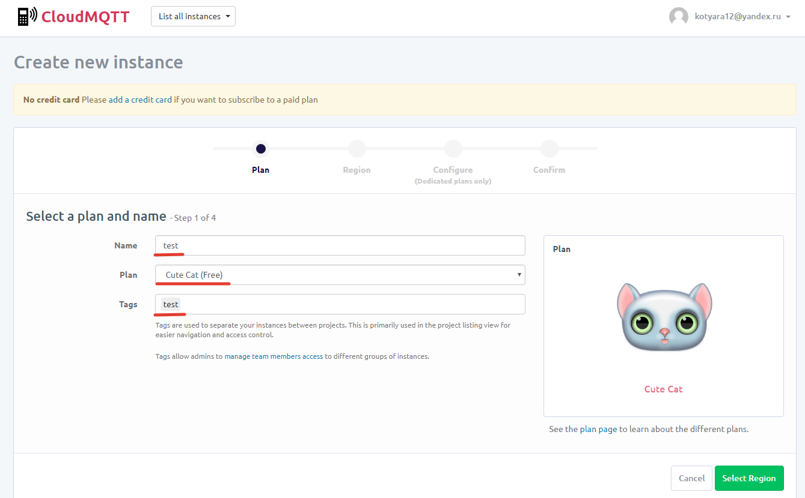После этого Вам будет предложено выбрать датацентр, где будет физически расположен Ваш виртуальный сервер. Для бесплатного плана их всего два: в США и в Европе, остальные не доступны: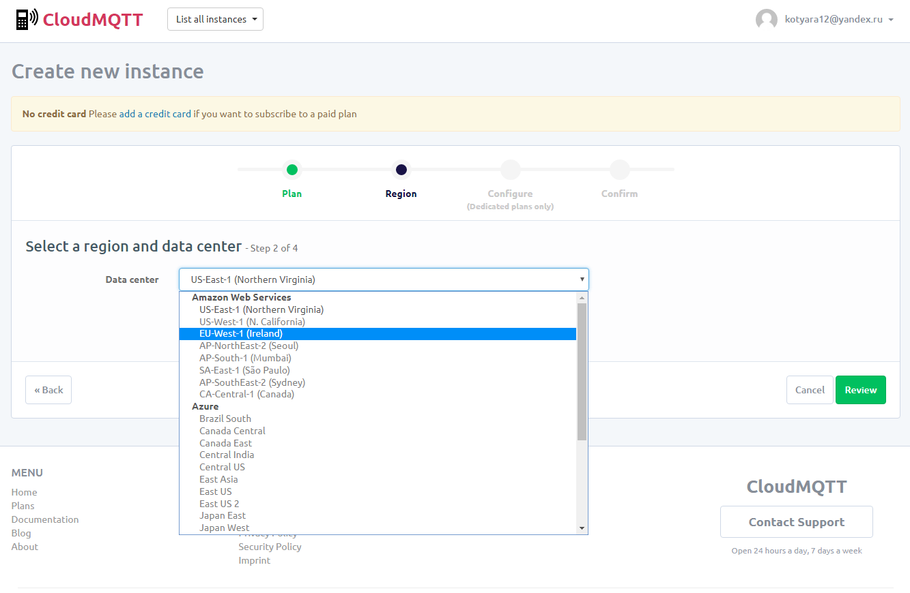Подтверждаем выбор и… в общем-то все. Конфигурировать ничего не нужно – этот шаг доступен только на платных тарифных планах. Останется только подтвердить создание экземпляра. После подтверждения он появляется списке. Нажимаем на ссылку – название: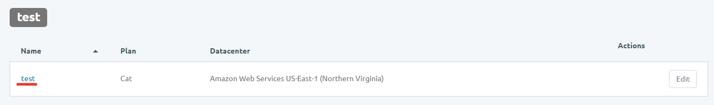Вот здесь на нужны имя сервера и порт подключения к нему (открытый или через SSL):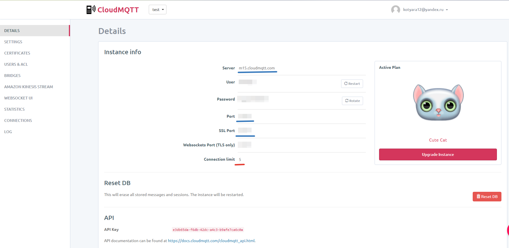Имя пользователя и пароль, которые указаны на этой странице лучше не использовать в скетче. Для “клиентов” создадим другого пользователя (а можно и не одного). Для этого нажимаем меню “USERS & ACL“, вводим желаемое имя пользователя и пароль, добавляем пользователя в список. Вот это имя и пароль мы и будем использовать в скетче в дальнейшем. А также и в мобильных клиентах на смартфоне при просмотре данных из экземпляра. Можно настроить разных пользователей для записи в топики с устройства и для чтения данных на смартфоне. Затем внизу страницы выбираем режим “Pattern” (сразу для всех пользователей) либо “Topic” (только для выбранного пользователя), указываем шаблон имен топиков, на которые нужно задать права доступа, выбираем собственно права (только чтение, только запись, либо и чтение и запись).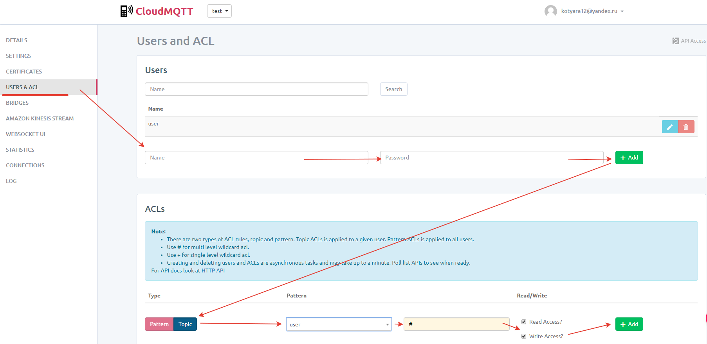Все, предварительные настройки выполнены.
Уже после написания и публикации статьи, CloudMQTT ввел дополнительные ограничения в бесплатных аккаунтах – теперь можно создавать не более 4 instances. Кому как, но мне этого очень мало. Пришлось искать другой публичный MQTT брокер. Пока что я пользуюсь mqtt.flespi.io брокером. Но и он ввел ограничение – вначале он допускал в бесплатном режиме подключение аж 100 устройств одновременно, но сейчас и там ограничение в 10 устройств. Увы, но придется либо платить, либо поднимать свой MQTT на каком-либо хостинге.
cloud.yandex.ru
Managed Kubernetes® в Yandex Cloud
Структура топиков
Я использовал следующую структуру топиков:
где:
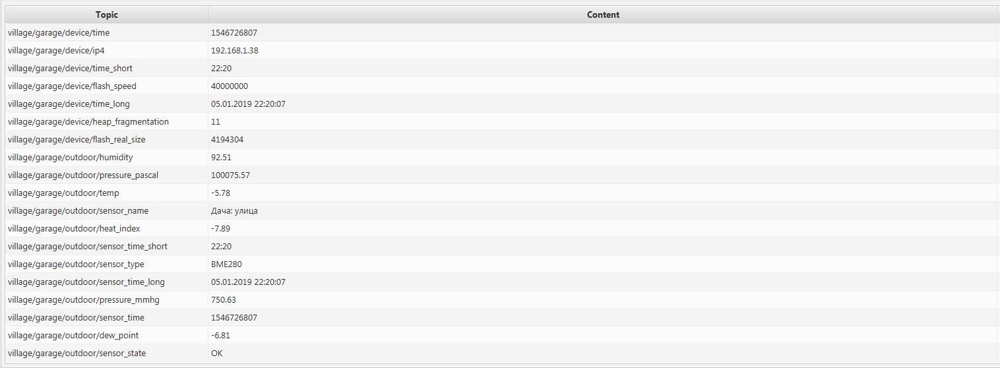Разумеется, структуру публикуемых топиков можно изменять.
Регистрация на сервере ThingSpeak
MQTT это конечно хорошо. Это просто и удобно. Но MQTT обладает одним небольшим недостатком – на MQTT брокере сообщения либо вообще не хранятся, либо хранится только последнее опубликованное сообщение (в случае, если оно retained). И если нам хочется посмотреть график изменения температуры в течение, скажем, суток, то придется все эти сутки держать запущенным клиент MQTT на смартфоне, а он любит кушать много энергии от батареи. А уж посмотреть данные за прошедшие сутки вообще нет никакой возможности. Но выход есть – можно параллельно отправлять данные на другой сервер – ThingSpeak, он будет накапливать Ваши данные и затем отображать их в виде графиков за любой период. Для работы с ThingSpeak не потребуется никаких дополнительных библиотек, он работает через REST API. 1. Переходим по адресу thingspeak.com. 2. Нажимаем кнопку “Get Started For Free”: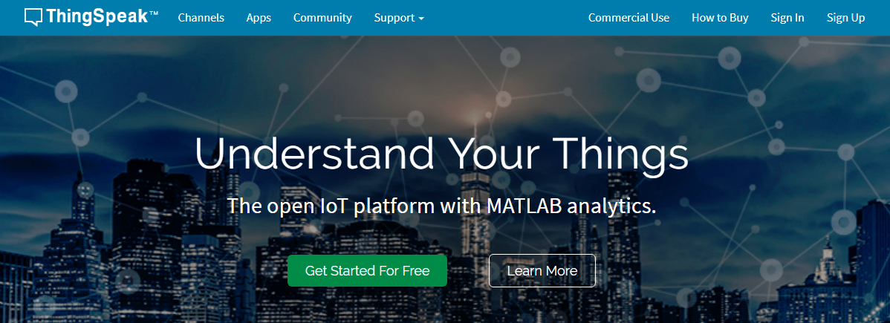3. Указываем адрес электронной почты, выбираем страну: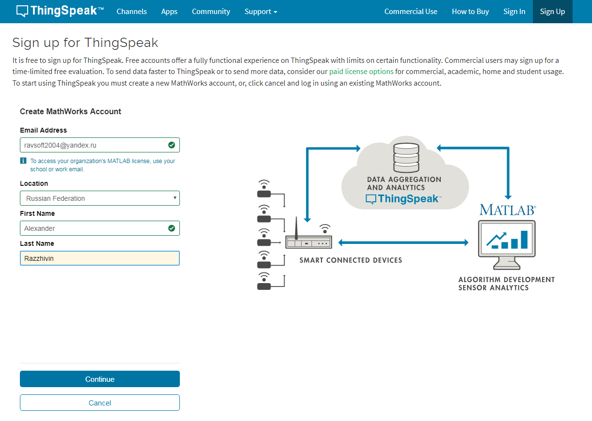4. Подтверждаем, что указанный адрес используется и для MatLab: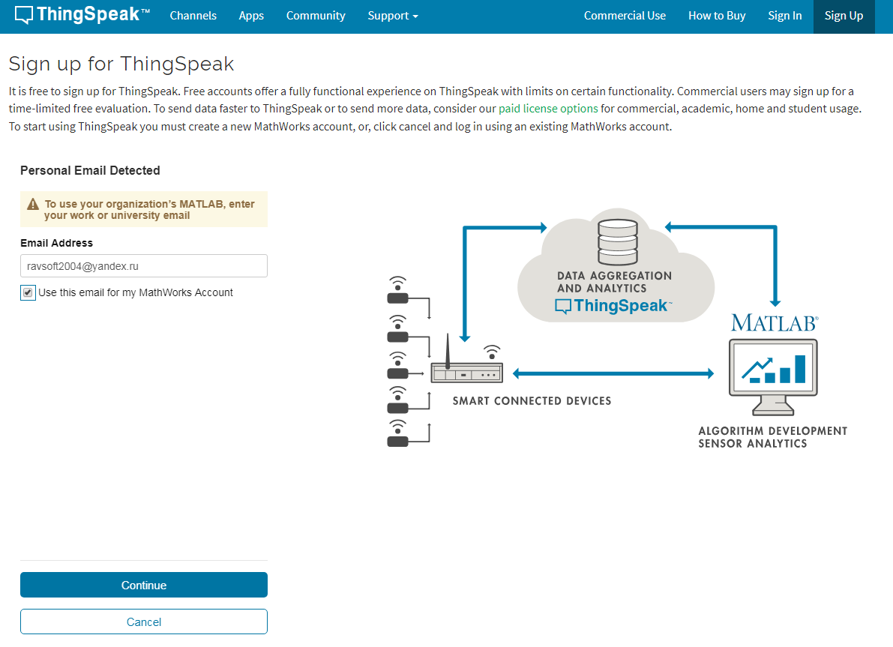5. Дожидаемся письма на почту, подтверждаем учетную запись, нажимаем “Continue”: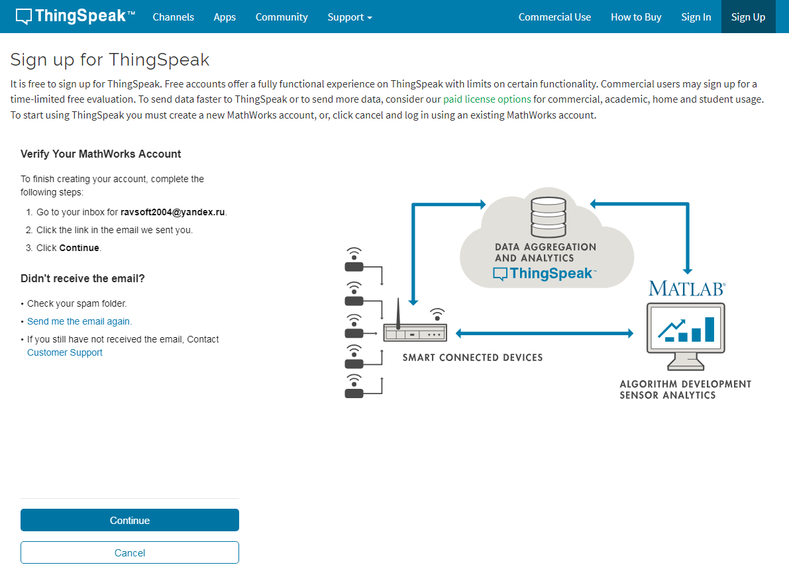6. Вводим имя профиля и придумываем пароль: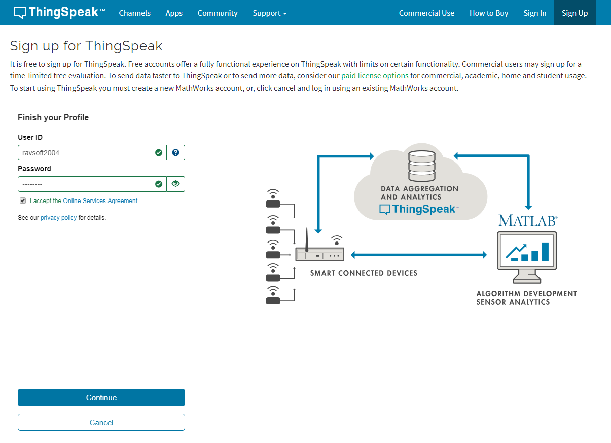7. Регистрация завершена, можно создавать каналы. Каналов потребуется столько, сколько у нас датчиков, то есть как минимум четыре. Для создания канал нажмите “New Channel”: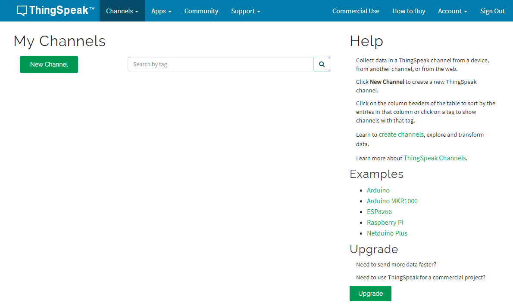8. Вводим название канала и список полей, в которые будут поступать данные. Можно использовать до 8 полей: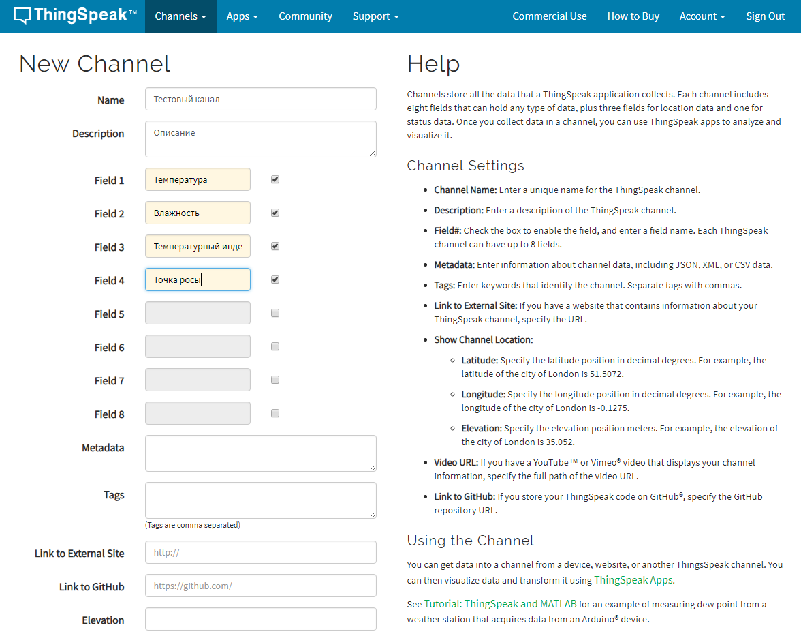9. После сохранения канала попадаем в “приватный просмотр” данных канала, где и данных-то пока нет. Переходим во вкладку “API Keys”: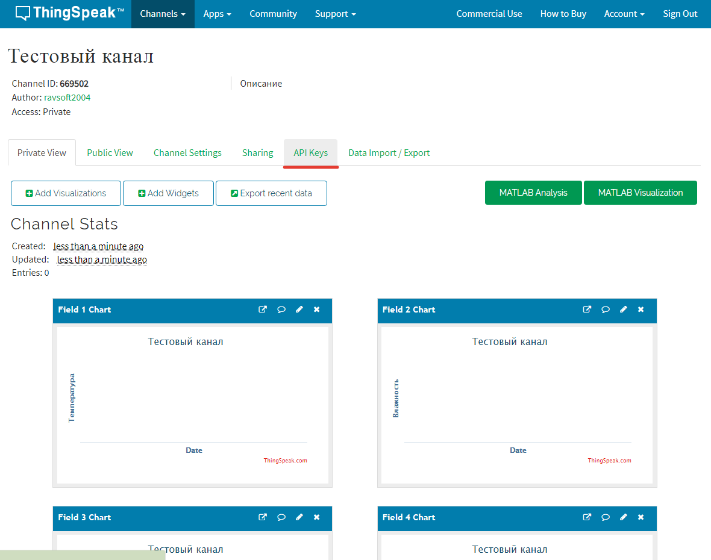10. Здесь нам понадобится Write API Key – его нужно указать в скетче. Read API Key понадобится при настройке виджетов на смартфоне для отображения данных. Сохраним эти данные куда-нибудь.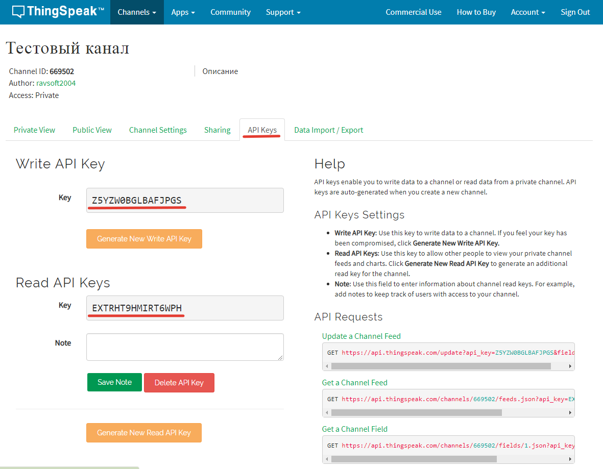Повторяем шаги 7-10 пока не будет добавлено нужное количество каналов. В бесплатном режиме ThingSpeak сейчас допускает не более 4 каналов на аккаунт, но можно создать несколько аккаунтов. Для датчиков BME280 нужно будет указать дополнительные поля для хранения данных об атмосферном давлении. После того, как данные начнут поступать в каналы, их можно будет удобно просматривать либо на самом ThingSpeak, либо с помощью API на любом другом сайте: ravsoft2004.narod.ru
РЕКЛАМА•16+
practicum.yandex.ru
Курс «Мидл python-разработчик» подорожает на 15%
Программа / скетч
Общая логика работы скетча: 1. Пытается подключиться к WiFi в бесконечном цикле. Пока соединения с сетью нет – переключаем состояние светодиода и ждем некоторое время – получается мигание. Как только соединение с WiFi установлено – светодиод гасим. Если соединение вдруг пропало – вновь пытаемся подключиться и т.д. 2. Как только соединение установлено, запускаем синхронизацию “локального времени” с NTP-сервером. Точное время очень пригодится, а включать в схему еще и модуль часов при наличии интернета слишком расточительно. Будет вполне достаточно синхронизации с NTP-сервером один раз в пять-десять минут. 3. Затем подключаемся к MQTT-серверу и подписываемся на топики:
Плюс в данном случае означает, что мы хотим получать сообщения с любым названием топика 4. Раз в пять-десять минут (интервал задается в настройках) собираем данные с датчиков, рассчитываем “ощущаемую температуру” и “точку росы”, а затем публикуем их на брокере. 5. Поскольку сервер ThingSpeak требует, чтобы публикация данных была не чаще, чем один раз в 15 секунд (а лучше 20), то кладем сообщения для ThingSpeak в “очередь”, из которой они постепенно публикуются каждые 20 секунд.
Скачать скетч:
Есть две верии скретча:
Скетч "telemeter.ino" :: версия 4
Скетч "telemeter.ino" для ArduinoIDE, версия 4 (одним файлом)
965 downloads7.99 KB
Скетч "telemeter.ino" :: версия 5
Скетч "telemeter.ino" для ArduinoIDE, версия 5 (с библиотеками)
857 downloads22.51 KB
Код снабжен комментариями, так что Вы сможете изменить его под свои потребности.
РЕКЛАМА
bitrix24.ru
Бесплатная CRM система Битрикс24
РЕКЛАМА
yandex.ru
Промокод для новых клиентов на рекламу в Яндекс Директе

РЕКЛАМА
rus.itland.ru
РЕКЛАМА
firstvds.ru
Space adventure от FirstVDS! Самая космическая акция
Прежде чем заливать скетч в ESP, его нужно настроить под Ваши параметры:
1. Изменить параметры WiFi сетей. В скетче предусмотрено подключение сразу к трем сетям. Сделано это для того, чтобы не перенастраивать каждый раз параметры WiFi – программа сама выберет нужную сеть.
const char* wifi1_ssid = "************"; // Имя WiFi сети 1
const char* wifi1_pass = "************"; // Пароль WiFi сети 1
const char* wifi2_ssid = "************"; // Имя WiFi сети 2
const char* wifi2_pass = "************"; // Пароль WiFi сети 2
const char* wifi3_ssid = "************"; // Имя WiFi сети 3
const char* wifi3_pass = "************"; // Пароль WiFi сети 4
2. Изменить параметры подключения к MQTT-брокеру:
const char* mqttServer = "mqtt.flespi.io"; // Имя сервера MQTT
const int mqttPort = 1883; // Порт для подключения к серверу MQTT
const char* mqttUser = "*****************"; // Логин от сервера MQTT
const char* mqttPass = ""; // Пароль от сервера MQTT
3. При желании изменить названия топиков MQTT:
const char* mqttSite = "village"; // Префикс топиков (местоположение)
const char* mqttDeviceId = "garage"; // Идентификатор клиента MQTT
const bool mqttStartSlash = false; // Топики всегда начинать с "/"
const char* mqttSensor1 = "outdoor"; // Улица
const char* mqttSensor2 = "garage"; // Гараж
const char* mqttSensor3 = "cellar_up"; // Погреб 1
const char* mqttSensor4 = "cellar_down"; // Погреб 2
const char* nameSensor1 = "Дача: улица"; // Улица
const char* nameSensor2 = "Дача: гараж"; // Гараж
const char* nameSensor3 = "Дача: погреб 1"; // Погреб 1
const char* nameSensor4 = "Дача: погреб 2"; // Погреб 2
4. Изменить API ключи для каналов Thing Speak – указываем здесь Write API key:
const char* tkeySensor1 = "****************"; // Улица
const char* tkeySensor2 = "****************"; // Гараж
const char* tkeySensor3 = "****************"; // Погреб 1
const char* tkeySensor4 = "****************"; // Погреб 2
После этого можно заливать скетч в ESP и проверять работу. для отладки в Serail port идет подробный вывод того, что делается в текущий момент. Позже весь этот вывод можно закомментировать.
РЕКЛАМА
cloud.mts.ru
Дешевые виртуальные машины
Скидка 5000 ₽ на облачные сервисы
РЕКЛАМА•16+
practicum.yandex.ru
Курс «DevOps для разработки» от Яндекс Практикум
РЕКЛАМА
cloud.yandex.ru
Managed Kubernetes® в Yandex Cloud
РЕКЛАМА
sale-server.ru
Серверы из США и Европы. Гарантия 3 года. Все в наличии!
Мобильный клиент MQTT
Для управления “умными” устройствами с мобильного телефона существует масса программ, каждый может выбрать себе “по вкусу”. Я попробовал несколько и остановился на IoT MQTT Panel, оно мне показалось самым функциональным и удобным. 1. Устанавливаем, нажимаем “+” для добавления подключения. Вводим параметры подключения к серверу MQTT, которые мы видели на странице “instance info”. В качестве Client ID указываем любое уникальное значение. В список Device list пока добавляем только название устройства – это будет название страницы, на которой расположены панели с датчиками. Затем нажимаем “Advanced options” и вводим имя пользователя и пароль для доступа к серверу MQTT – уже со станицы “USERS % ACL”. Если все введено правильно, программа соединится с сервером и пиктограмма облака станет красной:
|
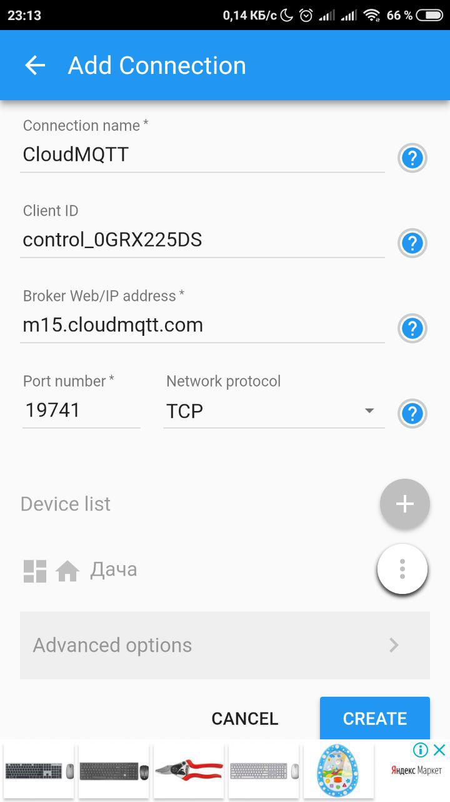 |
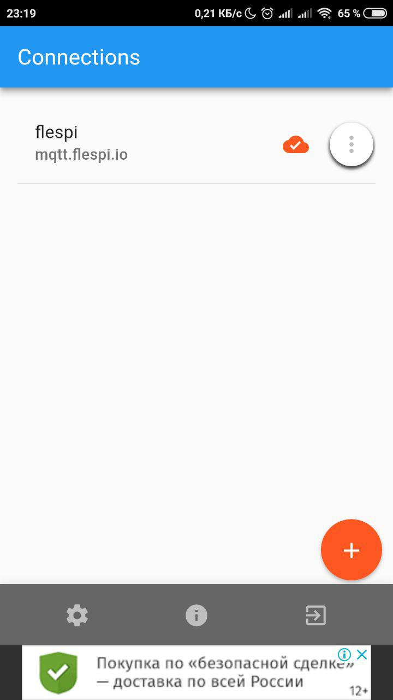 |
2. “Проваливаемся” в соединение, видим пустой экран и пиктограмму соединения справа вверху. Прежде чем добавлять панели виджетов, лучше настроить только что созданное устройство. Для этого тапаем по значку “меню” в левом верхнем углу экрана и выбираем пункт “Device Configurations”. Здесь можно изменить цвет вкладки, пиктограмму, и самое главное – задать префикс топиков, чтобы не повторять одинаковое начало на каждой панели:
|
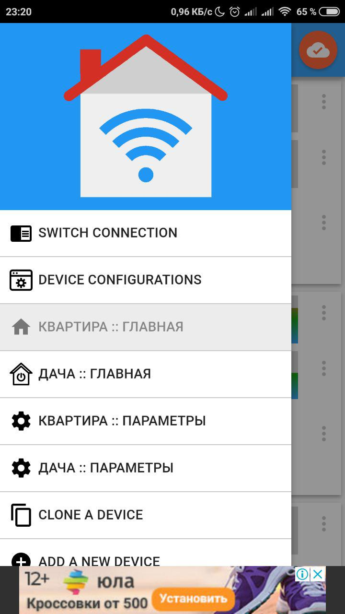 |
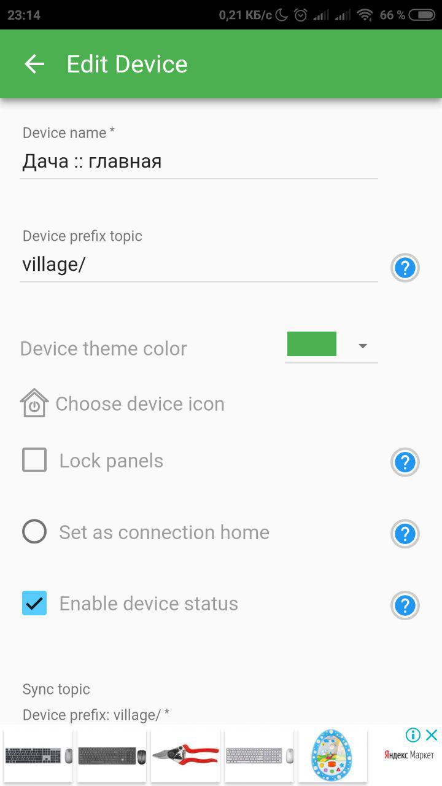 |
3. Теперь можно добавлять панели. Типов панелей программа предлагает достаточно много. Выбираем нужный тип, например для отображения температуры я выбрал “Vertical Meter”. Вводим параметры, учитывая префикс топиков, который мы указали на предыдущем этапе:
|
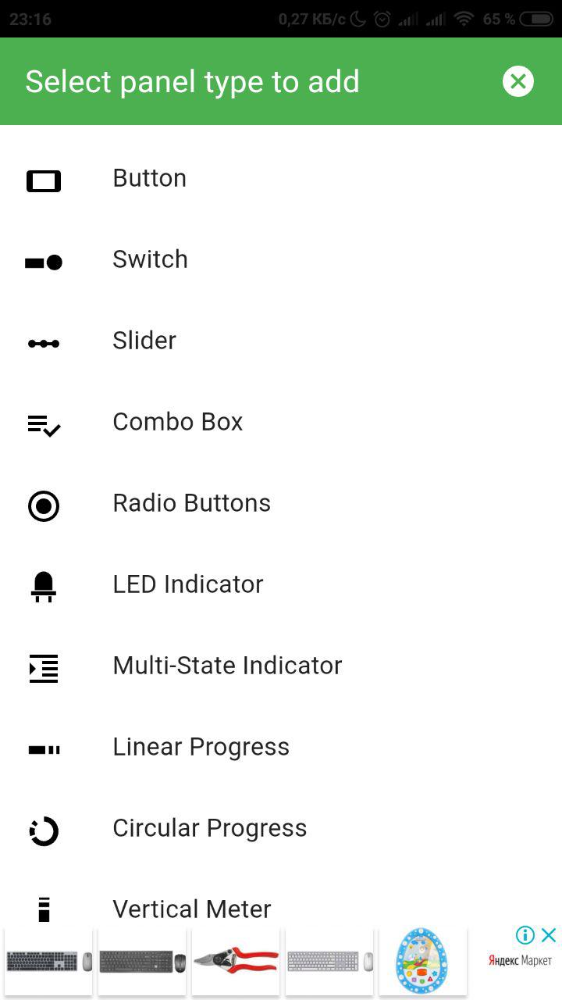 |
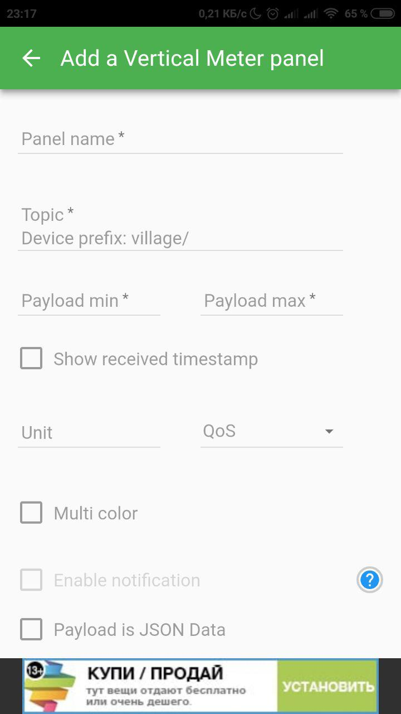 |
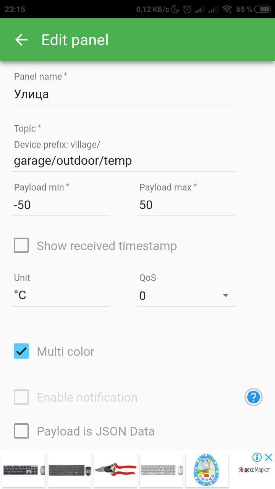 |
4. Сохраняем и проверяем результат. Разумеется, отображаться значение будет только после того, как придут данные от собранного устройства. Для каждого датчика и для каждого устройства придется добавить отдельные панели – виджеты, поначалу это довольно утомляет. Но процесс облегчается тем, что созданные панели можно клонировать. Полностью настроенное устройство можно опубликовать на том же брокере и затем легко перенести на другой смартфон. Наслаждаемся результатом:
|
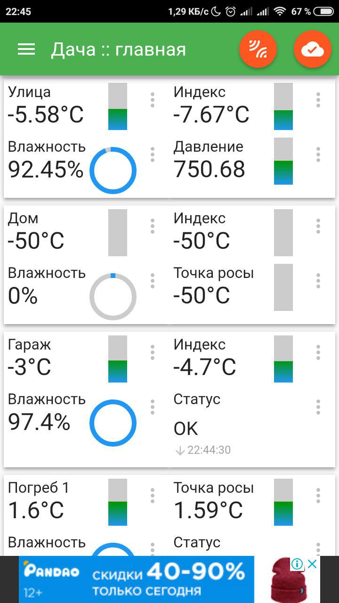 |
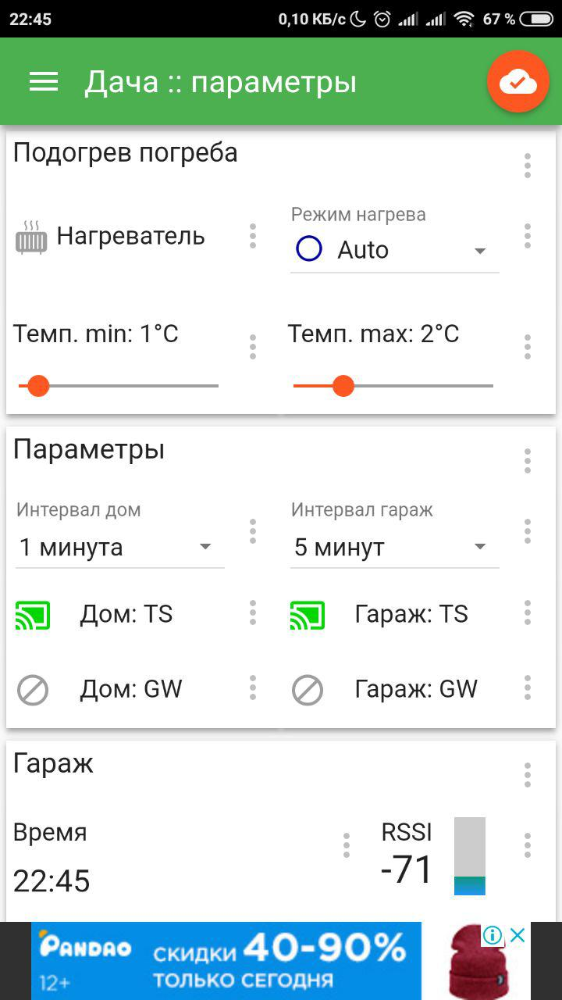 |
Для удобства я разделил на две разных страницы в программе (которые называются здесь “device”) параметры и отображаемые данные.
Мобильный клиент ThinkSpeak
Для просмотра данных с ThinkSpeak можно использовать обычный браузер, а также существует множество программ для android. Лично мне самым практичным показался “IoT ThingSpeak Monitor Widget“. Для его настройки потребуется номер канала и Read API key (если канал не публичный).
|
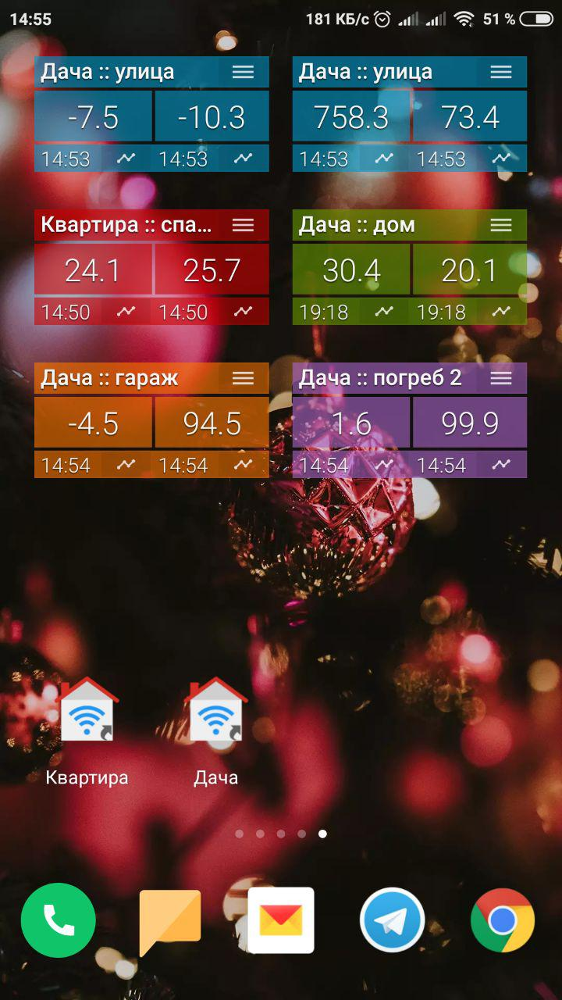 |
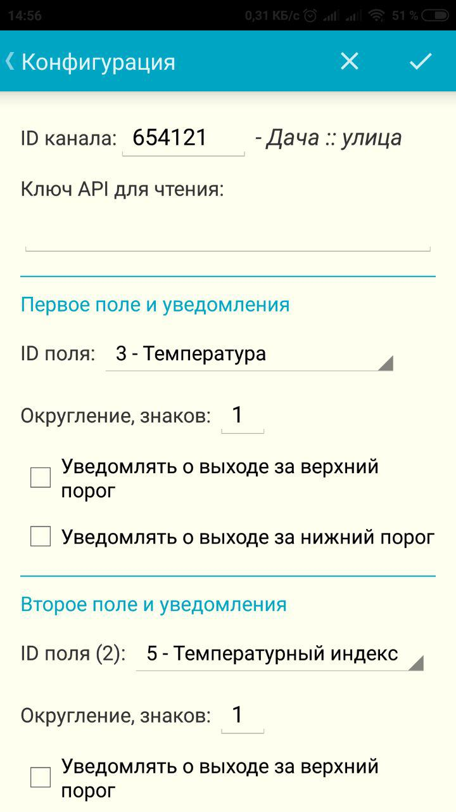 |
Это все, посмотреть текущие данные можно здесь.